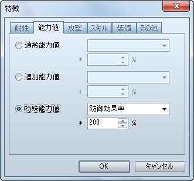

両方の手に武器を装備させたい場合の設定方法です。
［アクター / 職業］特徴 − 装備 − スロットタイプ − 二刀流
装備品の取り外しを出来なくしたい場合の設定方法です。
［アクター / 職業］特徴 − 装備 − 装備固定 − 武器 / 盾 / 頭 / 身体 / 装飾品

戦闘中にプレイヤーがコマンド入力することが出来ず、独自に行動させたい場合の設定方法です。
［アクター / 職業］特徴 − その他 − 特殊フラグ − 自動戦闘

戦闘中の［防御］コマンド実行時に受けるダメージを減らしたい場合の設定方法です。
［アクター / 職業］特徴 − 能力値 − 特殊能力値 − 防御効果率

使用した回復アイテムの効果を上げたい場合の設定方法です。
［アクター / 職業］特徴 − 能力値 − 特殊能力値 − 薬の知識

会心の一撃（VX では「クリティカルヒット」）の発生確率を上げたい場合の設定方法です。
［アクター / 職業］特徴 − 能力値 − 追加能力値 − 会心率